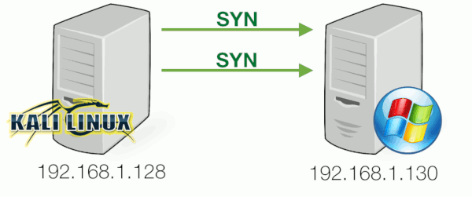

Lets browse webserver and use wireshark to capture traffic for explain little more things
just simply i open wireshark start traffic capture and go to webserver

in first screenshot we see three packets thats handshake, note that “Len=0” it means packet size/lenght is zero no data is transmitted just handshake
if we click any of tcp handshake packets in wireshark, below on white space we will see deep information,
we have source and destinaton ip address and ports, port 5057 is us, port 80 is webserver
flags:
TCP flags/messages, here we have only 1 or 0, 1=Set, 0=Not set
in this screenshot only one message is SET,
we have couple messages :
Synchronization (SYN) – It is used in first step of connection establishment phase or 3-way handshake process between the two hosts. Only the first packet from sender as well as receiver should have this flag set. This is used for synchronizing sequence number i.e. to tell the other end which sequence number they should except.
Acknowledgement (ACK) – It is used to acknowledge packets which are successful received by the host. The flag is set if the acknowledgement number field contains a valid acknowledgement number.
In given below diagram, the receiver sends an ACK = 1 as well as SYN = 1 in the second step of connection establishment to tell sender that it received its initial packet.
Finish (FIN) – It is used to request for connection termination i.e. when there is no more data from the sender, it requests for connection termination. This is the last packet sent by sender. It frees the reserved resources and gracefully terminate the connection.

Reset (RST) – It is used to terminate the connection if the RST sender feels something is wrong with the TCP connection or that the conversation should not exist. It can get send from receiver side when packet is send to particular host that was not expecting it.
Push (PSH) – Transport layer by default waits for some time for application layer to send enough data equal to maximum segment size so that the number of packets transmitted on network minimizes which is not desirable by some application like interactive applications(chatting). Similarly transport layer at receiver end buffers packets and transmit to application layer if it meets certain criteria.
This problem is solved by using PSH. Transport layer sets PSH = 1 and immediately sends the segment to network layer as soon as it receives signal from application layer. Receiver transport layer, on seeing PSH = 1 immediately forwards the data to application layer.
In general, it tells the receiver to process these packets as they are received instead of buffering them.
Urgent (URG) – Data inside a segment with URG = 1 flag is forwarded to application layer immediately even if there are more data to be given to application layer. It is used to notify the receiver to process the urgent packets before processing all other packets. The receiver will be notified when all known urgent data has been received.
Port Scanning and TCP messages
Open
Port 80 was found open . This means the server would be able to complete the full 3-way handshake for this port and allow incoming connections had we actually completed it. From a server-side that means it would reply with a SYN-ACK. If we wanted to make a connection, we should have replied with an ACK. However, doing a port scan, we’re not aiming to make the full 3-way handshake so we reply with a RESET instead:

in wireshark it looks:
Closed
Nmap discovered that port 22 was closed . In this case, the SYN packet sent by the client was returned with a packet where both RESET and ACK flags are set, indicating the server was not listening on port 22 :

Filtered
Nmap will attempt to resend the SYN-packet if no response is received. If after several retransmissions no response is received, the port is marked as filtered . (reason maybe is firewall, filter, or other network obstacle is blocking the port so that Nmap cannot tell whether it is open or closed)
